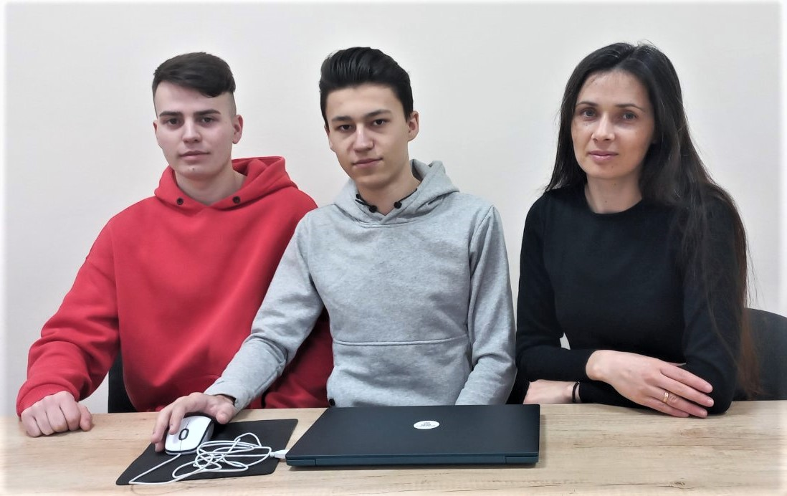
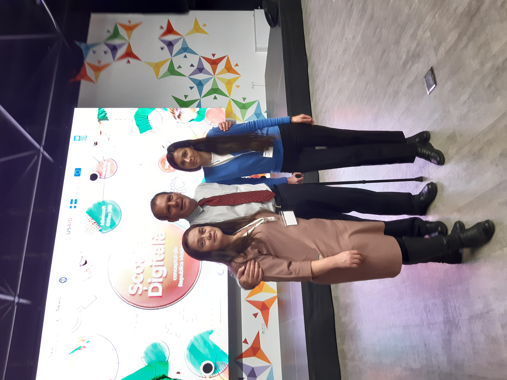

Procopii Tatiana
|
TEACHER of French and German MQA-tester Ro Fr Ge En +37367624261 sakuratako30@gmail.com |
Highly motivated employee with the desire to face new challenges. Strong ethics, adaptability and exceptional interpersonal skills. Adept at working effectively without supervision and quickly mastering new skills. Responsible and motivated ready to apply education on the job. Provides excellent technical skills with software and applications, ability to handle challenging work and excellent time management skills. |
|  | 
|
 |
Experience
TEACHER 02/2013 - Current
Teacher in "Miron Costin" Theoretical High School, Florești, MD
• Prepared and presented lesson plans in academic subjects using traditional and
modern teaching techniques.
•
Assisted fellow teachers with assignment development, special projects, tests,
administrative updates and grading.
•
Enhanced lessons with smart board technology, iPads and computers to address
common core goals.
• Created lesson plans and chose supporting materials to promote positive learning experiences.
• Tested students' comprehension of subject matter through quizzes, tests and projects.
• Used videos, lectures and moderated discussions to engage students during class.
Teacher of programming and web development 01/2020 - Current
I taught the programming and web development course at the basic level to high school students as an optional lesson. In 2022 and 2023, my students took 1st place at the republic level and 3rd place at the regional level by creating a website for a local company.
Author of didactic materials within the Francophone organization CREFECO 10/2023 - Current
We have created lesson plans for foreign language classes, applicable in several languages and for any level within the subject Multilingualism in foreign language classes.
Creator of Culture et Civilization française site 10/2023 - Current
We have created a site for learning the culture and civilization of France for students who are preparing for the baccalaureate in the French language. The site is built in HTML, CSS and JS markup languages.
Education
Programming and web development course at Tekwill in every School Chișinău, 04/2023
I followed a training course in programming and web development to teach this field in optional classes in high school
Tester Manual QA, High School Diploma at Tekwill Akademy Chișinău, 04/2023
Course modules:
I. Fundamentals of Testing
II. Testing throughout the Software Life Cycle
III. Static Testing
IV. Dynamic Testing - Test Design Techniques
V. Test ManagementVI. Introduction in HTML&CSS
VII. Test ToolsVIII. SQL for testing purposes
IX. Final Practicum - Knowledge of the Jira Tools
Master of Science: German and French Language and Literature, State Pedagogical University "Ion Creangă" Chișinău, 01/2020
I followed 2 years of master's studies in French language and culture, after 4 years of undergraduate studies in German and French language and literature.